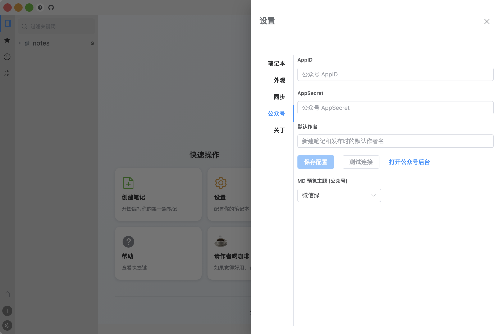

公众号接入
Snowpub 通过公众号官方 API 保存草稿和发布文章，需要先拿到你公众号的 AppID 和 AppSecret，并把本机 IP 加入白名单。全程约 5 分钟。
获取 AppID / AppSecret
- 登录公众号后台 mp.weixin.qq.com
- 左侧菜单「设置与开发」→「基本配置」
- 「开发者ID」一栏可以看到 AppID；AppSecret 点「重置」后会显示一次，立即复制保存
AppSecret 只在重置后显示一次。忘了就再点一次「重置」——重置后旧 Secret 立即失效，记得回 Snowpub 更新为新值。
配置 IP 白名单
微信 API 只允许白名单内的 IP 调用，本机 IP 不在名单里的话「测试连接」会直接失败。
- 查本机公网 IP：浏览器打开 ipip.net，或在百度搜索「IP」
- 公众号后台 → 设置与开发 → 基本配置 → IP 白名单 → 点「修改」
- 粘贴你的 IP，保存
- 回到 Snowpub → 设置 → 公众号 → 点「测试连接」
家庭宽带的公网 IP 会变。换了网络环境（比如去了咖啡馆）之后发布失败，先检查 IP 是否还在白名单里。
测试连接
在 Snowpub 里打开 设置 → 公众号（侧边栏底部 ⚙ 齿轮），输入 AppID / AppSecret，点「测试连接」：

看到「连接成功」提示，说明 API 已打通，可以开始发布了。这一页还有「打开公众号后台」按钮，一键跳转到 mp.weixin.qq.com。
个人订阅号说明（48001）
个人主体的订阅号没有 API 发布权限——调用发布接口会返回 48001 错误。这是微信对个人号的限制，不是你的配置出了问题。
Snowpub 的对策是先存草稿，再手动发布：
- Snowpub 把文章存入公众号草稿箱后，去公众号后台 → 草稿箱发布，或在手机上用「订阅号助手」App 发布
- Snowpub 检测到 48001 后会记住这个状态，之后默认引导你存草稿
- 存草稿不受 48001 限制——草稿接口个人号可以正常使用
未认证订阅号的能力边界
| 能力 | 个人订阅号 | 其他未认证主体 | 认证后 |
|---|---|---|---|
| 保存草稿 | ✅ | ✅ | ✅ |
| API 发布 | ❌（48001） | ❌（48001） | ✅ |
| 上传素材 | ✅ | 以官方文档为准 | ✅ |
个人订阅号一列是 Snowpub 的实测结果；不同主体、不同认证状态的接口权限以微信官方文档为准。
下一步：写作与发布——双栏编辑、微信预览与发布对话框。